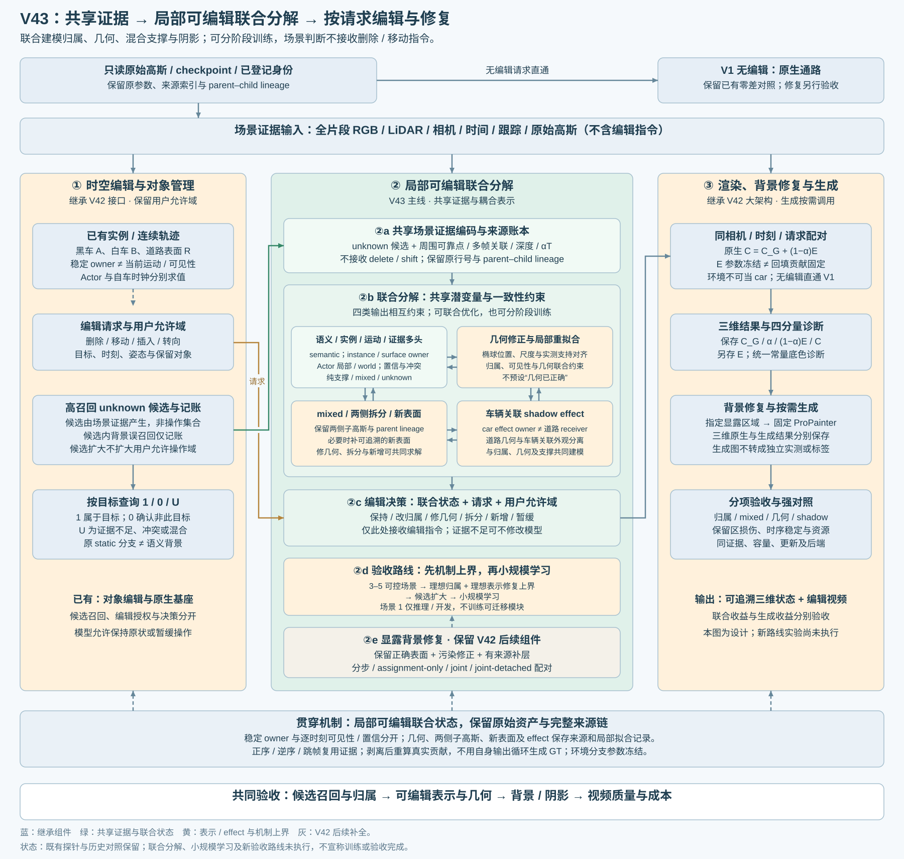

语义身份、几何支撑、混合责任与车辆关联效应共同解释多帧观测；可分阶段训练，但不再要求各问题分别彻底解决后才能联合。诊断拆项用于监督与消融。保留 V1 无编辑原生直出及 V42 的编辑、背景修复、按需生成架构。
本次仅设计修订，新增训练／渲染为0。旧三锚点短探针未显示编辑分离改善，尚无完整编辑质量验收；不能据此否定联合学习或建立串行必经顺序。
| 联合输出 | 用途与边界 |
|---|---|
| 语义／实例或表面／运动／证据四字段 | 稳定身份与当前可见性分开；场景判断不接收delete／shift等指令 |
| 混合责任、几何可靠性与修正 | 允许只改归属、修位置尺度、双侧拆分、有限新增或保持；mixed不硬塞单一类别 |
| 车辆关联阴影效应 | world道路receiver与车辆effect owner分开；阴影单独着色与验收 |
| 不确定性与补证据需求 | 归属后验、真实混合责任、当前可见性分别存储；score不直接称校准概率 |
unknown候选 ≠ 实际操作集合。在既有允许域内优先召回，正常道路进入候选只记成本和误召回，不否决扩候选。模型可将其判回road并保持。相同观察换指令时身份应一致，执行动作可以不同。
联合训练允许几何与归属相互约束；模型自己的预测、删点图和after暗像素不得循环成为GT。独立编辑参考可反传监督共享模型。暖启动与梯度启用是训练日程，不是把多个独立模型依次解决。
对象级独立渲染生成车辆／道路／阴影和删除、横移、旋转、光照参考，逐项施加漏归属、错深度、混合支撑等扰动。它首先是机制验证集；合成对象真值不等于每颗重建高斯都有唯一类别。
| 实验 | 回答的问题 |
|---|---|
| M0 参考与接口核验 | 独立真值、effect干预和合成接口是否有效？可与场景1环境诊断并行 |
| M1 理想归属 | 固定原表示，只把判断做对能带来多少收益？ |
| M2 理想表示修复 | 固定理想归属，修几何／双侧拆分／效应是否消除剩余瓶颈？与M1可并行 |
| M3 候选范围 | 目标保持全覆盖，增加正常背景后，最终编辑与计算如何变化？ |
| M4 小规模联合学习 | 在独立场景中能否学会有效操作？不先批量造训练数据 |
强消融：特征阈值／仅概率决策／仅表示修复／两者联合；再比顺序冻结、联合梯度、跨头stop-gradient。匹配候选召回和编辑覆盖，未执行目标仍计入残留，不能靠大量暂缓获胜。
场景1不训练新的共享模型及判断／修复／效应模块。固定模型迁移推理；如做连续状态优化，单列test-time adaptation。既有重建和人工反馈已使用场景1，它是开发诊断对象，不是整个方法的未见测试。
C = CG + (1−α)E。当前Actor路径无天空门控；原环境与静态在Actor10K冻结。部分黑带已定位到环境回填，但训练成因尚未证明。
| 相同相机／时刻／请求 | 基线高斯 | 待测分解后高斯 |
|---|---|---|
| 原环境冻结 | 原生最终RGB | 完整系统效果与残留 |
| 统一常量底色，仅诊断 | 原始覆盖／空洞 | 分解残影／几何／背景误改 |
每格存浮点CG、α、回填贡献、最终RGB，另存E或常量B与裁剪显示。环境参数冻结不等于回填贡献冻结。白洞不是补好道路。当前不重训环境；确认它成为主要瓶颈后，另做固定高斯、仅改环境的单因素对照。
原R2限定白底、unknown白材质六组204帧、三锚点＋200步child refit均不修改。R2显示、SH涂白、学习判断和最终编辑收益分别验收。旧49帧/三锚点不冒充新机制集；人工verdict保持空。
车身与关联阴影残留、横移后旧位重影、车体完整性、保留域损伤、时间一致性和任务完成率共同报告。没有独立GT时只报证据覆盖，不报告语义真召回。
4D LangSplat作为语义／时间选择基线；TRASE作为动态实例分组与编辑强基线。HUGS和EmerNeRF支持联合建模思路，不证明本任务已解决。Jev仅启发判断与执行分离，不是高斯方法。
TRASE已提出概率对应及联合重建／分割方向。V43应证明相近覆盖下残影更少、误改更少、结构更稳定；不能把“联合／概率化”本身当创新。新基线尚未运行。
禁止自动AutoDL关机；完成或空闲均保留实例，只有用户明确要求才关机。此规则覆盖旧自动关机约定。subagent仅使用6.1 sol或6.1 terra。本次不启动GPU任务，不从历史报告恢复队列。